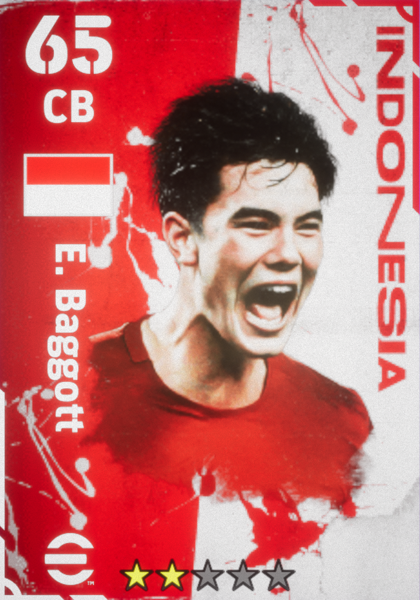

| Nama : Romy Hakim Wardana |  |
| NIM : 2109116102 | |
| Cita-cita : Ahli IT | |
| Hobi : |
| No | Jadwal | |||||
|---|---|---|---|---|---|---|
| Matkul | Hari | Waktu | Ruangan | Dosen | ||
| 1. | Pemprograman Web | Senin | 14.00 | D309 | Rezieq Fadillah, S.Kom., M.Kom | |
| 2. | Algoritma & Stuktur Data | Selasa | 09.00 | C408 | Akmad Irsyad, S.Kom., M.Kom | |
| 3. | Data Mining | Rabu | 14.00 | D306 | Yusak Effendy, S.Kom., M.Kom | |
| 4. | Pemprograman Berbasis Objek | Kamis | 09.00 | C407 | Abdul Fadillah, S.Kom., M.Kom | |
| 5. | Dasar-dasar Pemprograman | Jumat | 14.00 | D405 | Rezieq Saputra, S.Kom., M.Kom | |